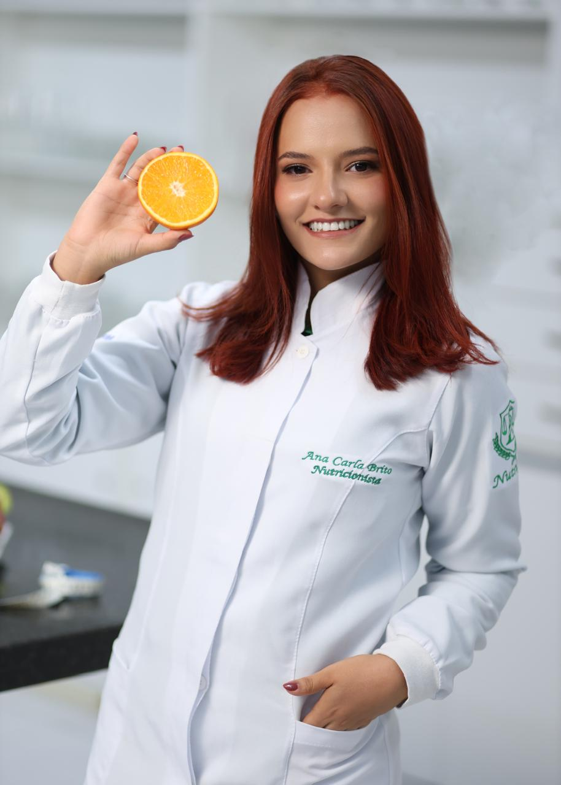
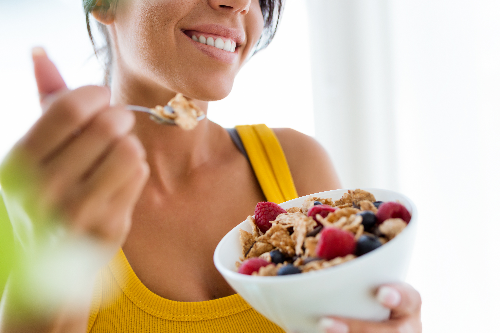

Como montar um prato equilibrado?
Algumas dicas simples para melhorar sua alimentação no dia a dia.
Encontre uma forma mais leve e equilibrada de cuidar da sua alimentação, respeitando seus objetivos e o seu dia a dia.
Um acompanhamento pensado para você, seus objetivos e sua realidade.
Aprenda a construir uma relação mais equilibrada com a alimentação.
Estratégias personalizadas de acordo com seus objetivos e sua rotina.
Acompanhe sua evolução e faça ajustes ao longo da sua jornada.

Sou nutricionista e acredito que uma alimentação saudável não precisa ser complicada ou distante da vida real.
Meu objetivo é ajudar cada pessoa a encontrar estratégias que façam sentido para sua rotina, seus objetivos e suas necessidades.
Conheça meu trabalho →Vamos conversar sobre sua rotina, seus hábitos e seus objetivos.
Conhecemos melhor suas necessidades e o que pode ser ajustado.
Criamos uma estratégia nutricional personalizada para você.
Acompanhamos sua evolução e fazemos os ajustes necessários.
"Consegui mudar minha alimentação sem sentir que estava fazendo uma dieta impossível de seguir."
— Maria"O acompanhamento foi muito mais personalizado do que eu esperava."
— Ana"Finalmente consegui encontrar uma rotina alimentar que funciona para mim."
— JoãoAlgumas dicas simples para melhorar sua alimentação no dia a dia.
Estratégias para quem possui uma rotina corrida e pouco tempo.

Vamos conversar sobre algumas ideias comuns relacionadas à nutrição.
Entre em contato para saber mais sobre o acompanhamento nutricional.
Agendar consulta